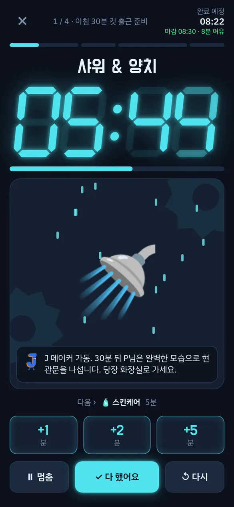

01폰에 설치하기
앱스토어 없이 웹 주소로 설치해요. 설치하면 주소창 없이 앱처럼 열리고, 인터넷이 없어도 실행돼요.
📱 아이폰Safari로 앱 주소를 열고, 아래쪽 공유 버튼(네모에 ↑) → 홈 화면에 추가를 눌러요.
🤖 안드로이드Chrome으로 앱 주소를 열고, 오른쪽 위 ⋮ → 앱 설치 또는 홈 화면에 추가를 눌러요.
앱 주소: imber123.github.io/j-maker
02루틴 시작하기
- 홈에서 루틴 하나를 골라요. 출근 준비, 욕실 청소, 등원 준비 같은 기본 루틴 6개가 들어 있어요.
- 카드 오른쪽의 ▶를 누르면 바로 시작해요. 카드에 "지금 시작하면 08:22 완료"처럼 끝나는 시각이 미리 보여요.
- 단계 시간이 0초가 되면 소리와 함께 다음 단계로 자동으로 넘어가요.
- 마지막 단계가 끝나면 결과 화면에서 J 지수와 등급을 받아요. 연장을 덜 할수록 점수가 높아요.
처음 ▶를 누를 때 소리가 켜져요. 무음 모드면 음성이 안 들리니 소리를 켜 두세요.
03타이머 화면 보는 법

- 오른쪽 위 완료 예정 · 마감지금 속도로 몇 시에 끝나는지 보여줘요. 마감 시각을 정했다면 몇 분 여유인지, 몇 분 늦는지도 나와요.
- 가운데 큰 숫자지금 단계의 남은 시간이에요. 1분 남으면 빨간색, 10초 남으면 깜빡이면서 삑 소리가 나요.
- 그림 · 말풍선 지금 할 일해야 할 행동이 계속 움직여요. 폰을 힐끗 봐도 알 수 있게요. 말풍선의 멘트는 음성으로도 나와요.
- +1 · +2 · +5 시간 연장늦어질 것 같으면 눌러요. 대신 누를수록 잔소리가 세지고 J 지수가 내려가요.
- 아래 버튼 멈춤 · 다 했어요 · 다시다 했어요는 일찍 끝냈을 때 다음 단계로 넘기고, 다시는 지금 단계를 처음부터 다시 세요. 왼쪽 위 ✕는 그만두기예요.
04출발 시각 정하기
"08:30에는 나가야 해"를 정해 두면, 몇 시까지 시작해야 하는지 거꾸로 계산해 줘요.
- 루틴 카드의 ✏️ → ⏰ 출발 · 마감 시각에 시간을 넣고 저장해요.
- 홈 카드에 "08:00까지 시작 · 12분 여유"가 표시돼요. 홈을 켜 두면 시작할 시각에 말로 알려줘요.
- 이미 늦었다면 ⚡ 압축해서 시작 버튼이 나와요. 모든 단계를 남은 시간에 맞게 줄여서 시작해요.
05내 루틴 만들기 · 고치기
- 홈 맨 아래 ＋ 새 루틴 만들기, 또는 카드의 ✏️를 눌러요.
- 단계 이름을 쓰면 어울리는 그림이 자동으로 붙어요. 예: "머리 말리기" → 💇♀️. 그림을 누르면 직접 고를 수도 있어요.
- − ＋로 단계 시간을, ↑ ↓로 순서를 바꿔요.
- 총 목표 시간을 넣으면 남는 시간이나 넘치는 시간을 계산해 주고, 한 번에 맞추는 버튼도 나와요.
06설정
홈 오른쪽 위 ⚙️에서 바꿔요. 말투는 누르면 바로 들어볼 수 있어요.
친절"P님, 잘하고 있어요. 이제 머리 말릴 시간이에요."
팩폭 (기본)"P님, 딴짓 금지. 당장 머리 말리세요!"
교관"P님! 동작 그만. 머리 말리기 실시!"
호칭"P님" 대신 원하는 이름으로 불러 줘요.
테마다크 네온, 미니멀 파스텔, 아케이드 중에서 골라요.
07자주 묻는 질문
소리가 안 나요
무음 모드인지 확인해 주세요. 소리는 ▶를 처음 눌렀을 때부터 나요. 일부 안드로이드 폰은 한국어 음성이 설치돼 있지 않을 수 있어요(설정 → 텍스트 음성 변환).
화면이 꺼지면 어떻게 되나요?
타이머가 도는 동안은 화면이 꺼지지 않게 해 둬요. 다른 앱으로 가거나 화면을 끄면 알림이 늦어질 수 있어요. 다시 열면 흐른 시간만큼 따라잡아요. 폰을 세면대나 화장대에 세워 두고 쓰는 걸 추천해요.
앱을 닫아 버렸어요
4시간 안에 다시 열면 "이어서 할까요?"가 나와요. 그동안 흐른 시간은 반영돼요.
내 기록은 어디에 저장되나요?
루틴과 기록은 모두 내 폰 브라우저에만 저장돼요. 회원가입이 없고, 다른 사람이 볼 수 없어요. 대신 브라우저 데이터를 지우면 같이 지워져요.
아이폰에서 진동이 안 와요
아이폰 Safari는 웹앱 진동을 지원하지 않아요. 안드로이드에서만 진동해요.
08의견 보내기
1분이면 돼요. 좋았던 것, 짜증 났던 것 다 솔직하게 알려 주세요. 다음 버전에 바로 반영할게요.